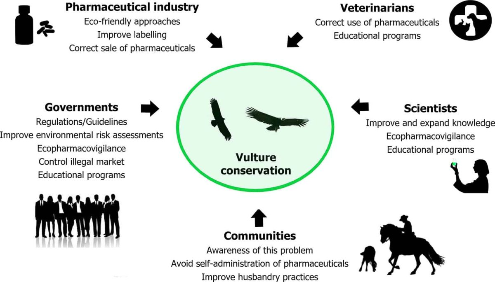

This blogpost was originally released through Widlife.ai, where I have contributed as a Data Ranger. If you’d like to learn more about Wildlife.ai’s mission of using AI/ML for nature conservation, check their website here.
Nature’s Sanitisers
Scavengers, and vultures in particular, provide an important ecosystem service, as they do the dirty work of cleaning up after animal death. This ensures that ecosystems stay healthy and safe from disease spread. Another well-known example of an ecosystem service is bee pollination. As in the case of bees, the potential of vulture extinction could pose a major risk to ecosystems worldwide.
The main threat to vultures is the large-scale transformation of ecosystems caused by humans. This effect, known as anthropisation, drives the population decline of species and habitat loss, which threatens ecosystems worldwide.
By collaborating with the Israel Nature and Parks Authority (INPA) through the Nesher Bari project (‘healthy vulture’ in Hebrew), we are leveraging an AI/ML solution to accelerate INPA’s conservation efforts towards Griffon vultures, the main endangered species of vultures in Israel.
Why Vulture Conservation?
Scavengers are essential to Earth’s ecosystem: they decrease the spread of disease by removing carcasses from the environment. There is a wide range of scavengers across the globe, both land- and ocean-bound: hyenas, coyotes, sharks, and killer whales are a few examples. However, vultures exclusively eat dead animal carcasses, and they have the most acidic stomach of all scavengers, allowing them to digest dead carcasses with botulinum toxins and rabies that would kill other scavengers. This makes them the most efficient and crucial family of scavengers on Earth. But as we will find out later, their acidic stomach also makes them the most susceptible to anthropisation.
There are 23 known species of vultures on Earth. In this project, we focus on one of the species that has the largest amount of data available: the Griffon vulture (Gyps fulvus, also known as the Eurasian Griffon). This amazing avian species, with a lifespan of up to 41.4 years and wingspan of up to 2.8m, can travel hundreds of kilometres in a day to find carcasses. Moreover, they can eat 10-20% of their body weight in dead animal carcasses (approx. 1.5kg) in one meal and then go without eating for a week (Harel et al 2016).
Currently, the International Union for Conservation of Nature (IUCN) has listed ten vulture species as Critically Endangered, with the Griffon vulture being locally endangered in Israel. Without urgent conservation action, these species could become extinct in the area, and potentially lead to cascading ecological damage that could be detrimental to ecosystems worldwide.
Vultures have seen a significant population decline in the last decades around the globe, which has been linked to anthropogenic causes. For example, in the 1990’s, India experienced a ‘Vulture Crisis’, where the three main species of vultures in the country lost 99% of their population. This event increased the population of ‘feral dogs’, which in turn caused an outbreak of rabies (a highly deadly disease), causing 50,000 human deaths in India and triggering a public health crisis that cost the government an estimated $34 billion.
Threats to Griffon Vultures
The main human-related activities associated with vulture mortality and morbidity (disease) are:
-
Poisoning: The main form of poisoning occurs when vultures ingest lead (Pb) via the remains of shot game animals (Pain et al., 2019). Poisoning also occurs when vultures ingest either pesticides or poison baits used in agriculture.
-
Electrocution & Collisions: This type of incident has increased over the last decades and occurs when vultures touch wires or crash into power lines or wind turbines, the latter cause becoming more frequent in the last decade.
-
Vet Medicine: Some veterinary products used for livestock, such as the Non-Steroidal Anti Inflammatory Drug (NSAID) diclofenac, cause vulture mortality when they feed on livestock remains. This cause led to a health emergency mentioned above that cost the Indian government billions of dollars. Surprisingly, we still haven’t observed a ban for many of these veterinary drugs.
-
Furtive hunting: Although Griffon Vultures are a protected species across Europe, illegal killing is still one of the main causes of mortality for this species.
From all these causes of mortality and morbidity, studies have found that ingestion of lead through carcasses is the biggest contributor for human induced mortality amongst Griffon vultures, followed by collision (Ives et al., 2022). The acidic nature of their stomach (low pH) cannot break down the lead. This facilitates the absorption and transmission of lead into their bloodstream and tissue, which results in lead poisoning (Pain et al., 2019). Moreover, a study by Descalzo et al 2021 found that Griffon vultures are the most susceptible to lead poison amongst the 16 species of birds of prey in the study.
Given the different threats to Griffon Vultures above, one of the easiest and most effective solutions would be to ban the use of lead ammunition for hunting and shooting. Leading the way, Denmark has become the first country in the world to completely ban lead hunting ammunition. Other countries are still lagging behind and refuse to take action against this potential human health risk. For example, in Spain lead ammunition is readily available, even though it has the highest population of Griffon vultures in Europe. Another key action is the regulation and law enforcement against the use of pesticides that are detrimental to Griffon vultures, implementing modifications to power lines (e.g., insulating wires) and wind farms.
Vulture Conservation
Given the passive behavior of governments to mitigate vulture population decline through the legal system, the effort of researchers and conservation agencies (both Governmental and NGOs) is crucial to tackling the risk of extinction and the threat it would pose to ecosystems worldwide.

In Israel, the population of Griffon vultures has been declining in the last years (read this article for more detailed info). Despite intensive conservation efforts by the Israel Nature and Parks Authority (INPA), some experts believe that this trend “suggest[s] we are approaching the extinction of this species in Israel and probably also through the Middle East”. For example, in the Negev desert in Israel, there are not enough carcasses to sustain the Griffon population (Spiegel et al. 2013). Thus sustaining this local population depends primarily on INPA’s effort and their 25 feeding stations over an area of 4,000 km2 (Harel et al. 2016b).
The INPA also monitors a significant percentage of the total Griffon vulture population in Israel. With ultra-light (below 3% of the bird’s body weight) GPS transmitters, they are able to track key information about these creatures such as location, speed, altitude and body temperature. As part of this monitoring effort, vultures are searched and rescued if there are signs of some vultures being at risk of death based on the collected data. However, the current alert system is quite laborious and its accuracy is yet to be refined.
Nesher Bari: Accelerating Vulture Conservation
The Nesher Bari’s team from Wildlife.ai is using animal tracking data to build an ML solution to accelerate vultures’ conservation effort. As we’ve learned, there are many potential causes of Griffon vulture mortality; therefore, it’s quite complex to predict what could cause the death of a vulture at any point in time. However, different inputs in the tracking devices might work as proxies to predict vulture mortality (e.g. location, altitude or body temperature). Building an ML algorithm that accelerates conservation efforts would be a great example of citizen AI/ML being used for environmental good.
The Journey so far
The Nesher Bari team is formed by Sonia Moushaev and me as Data Scientists (aka Data Rangers), Ayan Mukhopadhyay and Victor Anton as Project Managers (aka Project Rangers), as well as the biologists Ofer Steinitz, Ohad Hatzofe and Kaija Gahm.
Given that neither Sonia nor I have a background in ecology or conservation, the first hurdle has been wrapping our heads around the topic. By talking to experts, we’ve gained a bird’s-eye view of the technical and non-technical challenges before we start coding up the solution.
The next hurdle is understanding the sources of data: how they are related and whether they can be combined to create more enriched datasets. This is a more Data Engineering endeavor that’s crucial to constrain what ML approaches we can take. For example, with a supervised learning approach, we could feed a model with examples of tracking data from vultures at their time of death. By detecting patterns in the data that go unnoticed by humans, the model could infer what inputs are best at predicting vulture mortality. However, this assumes that we have access to enough of these examples.
At the time of writing, we have three main sources of data. Firstly, a time-series dataset provided by INPA, corresponding to 10 years of tracking data for 162 vultures. Secondly, a time series dataset provided by UCLA and Tel Aviv University, corresponding to 2 years of tracking data for 110 vultures. Finally, a look up table with more detailed information about individual vulture information (status, age, release date, … , etc) and most importantly, whether they are alive and the date of their death. As this is a living project, it’s likely that we will incorporate further data to enhance our AI/ML solution.
Summary & Next Steps
We’ve learned about the importance of scavengers to keep ecosystems healthy. In particular, vultures are the most efficient type of scavengers because of their acidic stomach, making their potential extinction a risk to ecosystems and global health. Despite their ecological importance, Griffon vultures are critically endangered in places like Israel due to anthropogenic (human) reasons.
Unfortunately, governments worldwide are failing to intervene and mitigate the population decline of this species through the legal system e.g. not banning lead ammunition which is the major threat to Griffon vultures. This makes action by conservation agencies like the Israel Nature and Parks Authority (INPA) crucial to ensure vulture populations don’t go extinct.
Using tracking time-series datasets of tagged Griffon vultures, we aim to build an ML model to quickly predict and identify when a Griffon vulture is at risk of death. This will equip INPA rangers with a data-driven tool to receive alerts more promptly and reduce the number of false alerts.
In the upcoming months, we will be further exploring these datasets in order to better understand the technical challenges, inform our ML approach, and create a pipeline that can be fed to this ML model.